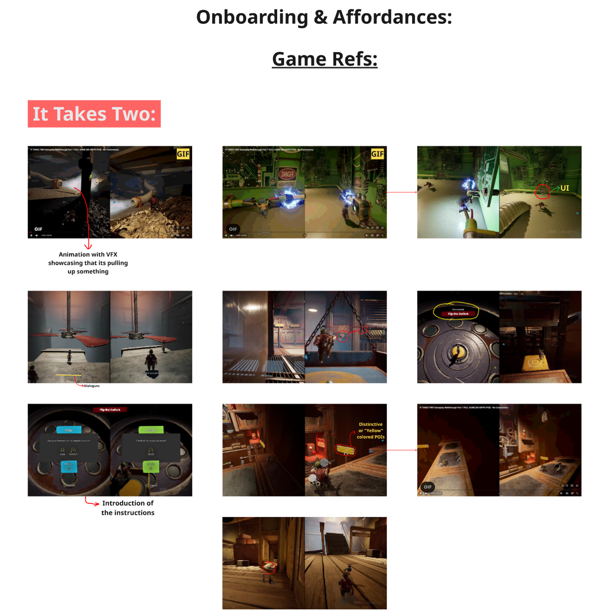
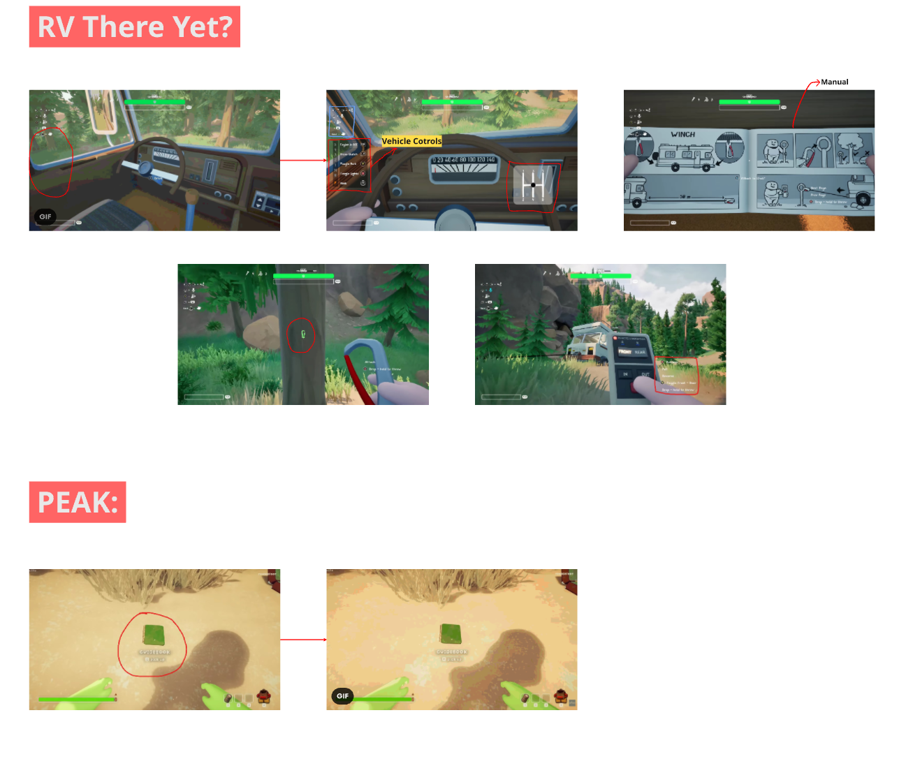
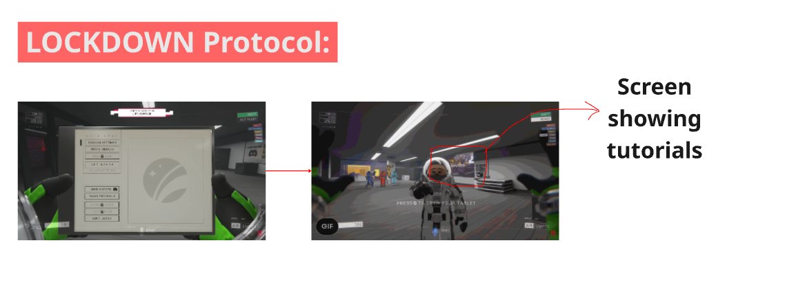
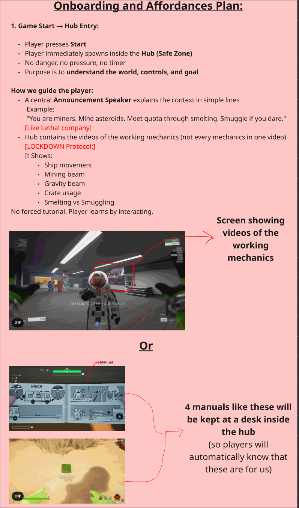
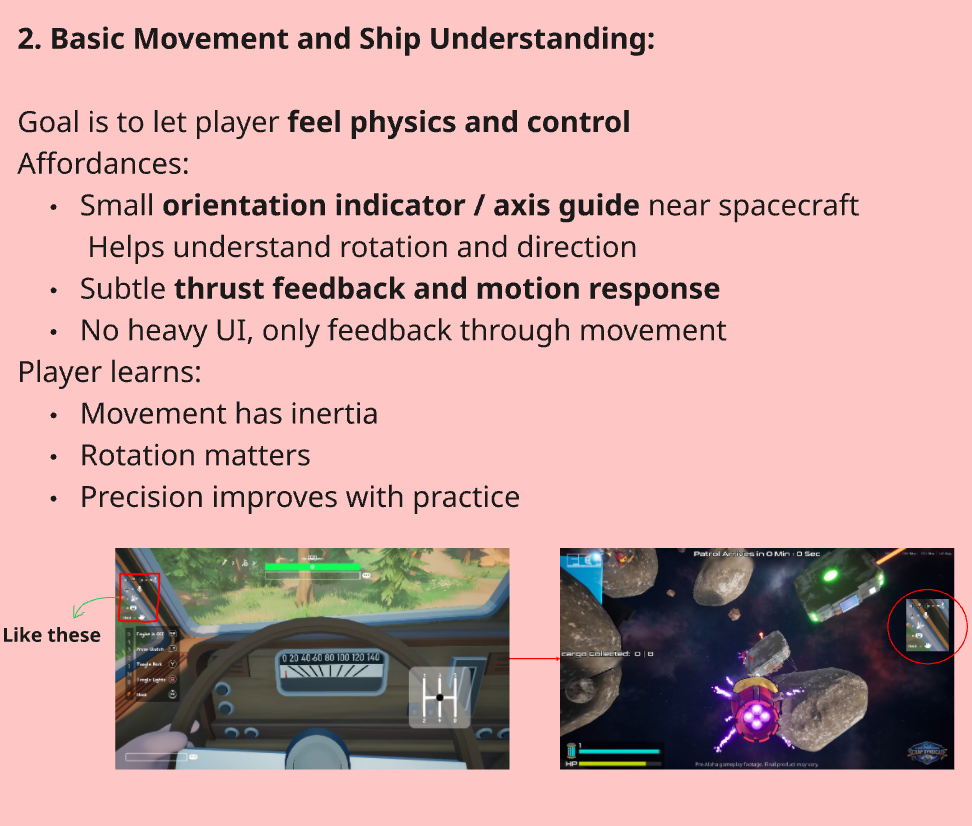
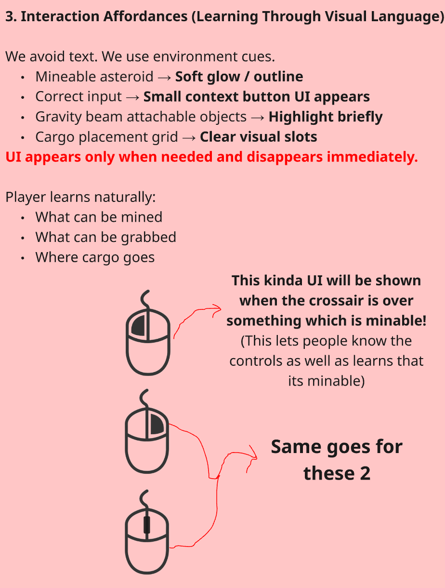
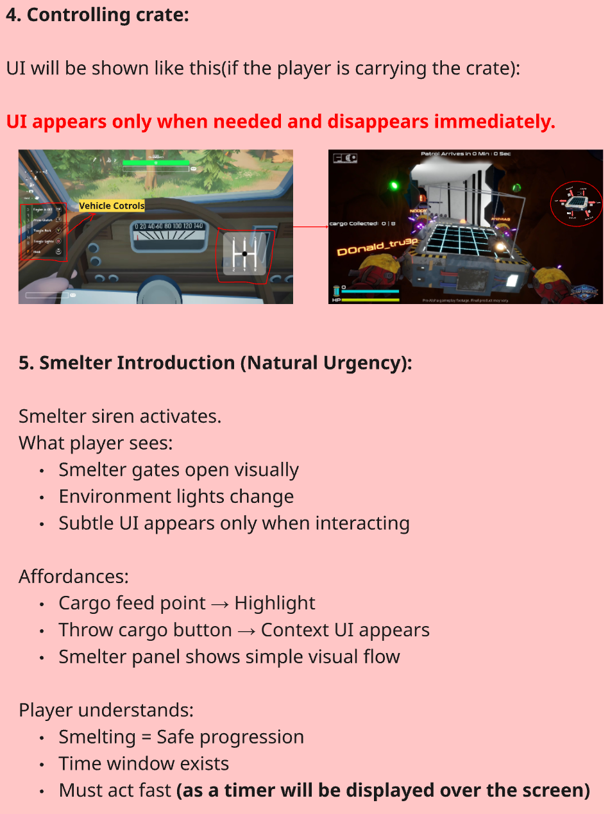

AOA: Space Scrap Smugglers
A physics-driven co-op space mining and smuggling game built with a 12+ person studio team at FatCatPlay. I designed cooperative physics rules, Smelter extraction pacing, textless onboarding, and visual GDDs for engineering.
★ Key Design & Technical Highlights
- Designed the Gravity Beam Mass Dependency rule so heavy salvage physically requires two players to coordinate instead of solo-carrying.
- Wrote modular visual GDDs used daily by programmers, artists, and QA across a 12+ person studio team.
- Built a textless onboarding flow inside a Hub-and-Spoke station using diegetic crosshair and color cues instead of tutorial popups.
- Specified ship inertia physics, crate-carrying weight rules, and the Smelter Urgency Loop to keep extraction runs tense.
01. Overview & Whimsical Tone
AOA: Space Scrap Smugglers mixes chaotic zero-G physics with playful, cartoon-style charm. Early in pre-production, we used concept explorations to lock in a lighthearted mood where mischievous alien crates and expressive planets contrast with tense co-op smuggling runs.
.png)
02. Cooperative Systems & Gravity Beam Rules
During early studio playtests, experienced players rushed ahead and extracted high-value scrap solo while teammates trailed behind. Instead of adding invisible walls, I tuned the physics rules around forced mechanical interdependence:
03. Station Flow & Textless Onboarding
We built the playable station as a Hub-and-Spoke layout anchored around the central smuggling ship. Teams venture down outward wings for higher-risk loot and always funnel back toward the central extraction bay, keeping everyone oriented without minimaps.


04. Studio Production Documentation
Working inside a 12+ person studio team meant documentation had to be visual and unambiguous so engineers and artists could build straight from the sheets:







05. Technical Design: Physics Rules, Smelter Loop & Diegetic UI
To turn our GDD sheets into clear engineering specs for programmers, I broke down every player interaction into clear physics states, crosshair feedback rules, and Smelter processing timers:
- Diegetic Crosshair & Object Outlines: Instead of floating text prompts, hovering over salvage shifts the center reticle and highlights the crate in green (solo lift) or amber (requires a second Gravity Beam).
- Zero-G Thruster Inertia: Tuned drift decay and braking impulses so players feel real weight when hauling salvage through narrow station corridors.
- Smelter Processing Urgency: Dropping crates into the ship's Smelter triggers a timed refining cycle with audio and light escalation, turning the final 30 seconds of every run into a coordinated scramble.